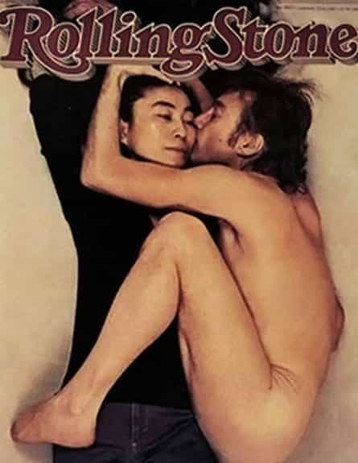

Daryush "Roosh" Valizadeh created ROK in October 2012. You can visit his blog at RooshV.com or follow him on Twitter and Facebook.


I recently stopped to listen to a street busker singing cover songs. One of those songs was Imagine by John Lennon. As the crowd around me happily sung along, I grimaced at lyrics that painted not peace and love but authoritarianism and control.
Imagine is a globalist anthem for ushering in plans of world socialism and unipolar government, and it’s still used today by those same globohomos, such as the Anti-Defamation league, which has attacked me in the past. They’re currently featuring the song (archive) for their “world without hate” page, which translates to “world where only we can hate.”
Below I have taken the lyrics and translated them to their actual meaning.
Imagine there’s no heaven
It’s easy if you try
No hell below us
Above us only sky
Imagine all the people
Living for today… Aha-ah…
Imagine if we killed off God and replaced him by managers, propagandists, and scientists controlled by a small group of elites who dictated the foods you would eat, the jobs you would have, and even the way you would love one another (yes means yes, rapist). Your new religion will be materialism where you wake up every day aching for physical possessions or desires that we manipulate to keep you in a constant state of mental slavery.
Imagine there’s no countries
It isn’t hard to do
Nothing to kill or die for
And no religion, too
Imagine all the people
Living life in peace… You…
Imagine that George Soros and his globohomo cronies succeeded with their plans of “open society” by destroying Europe and the United States with millions of low-grade migrants while bombing to smithereens any other country that resists their dictates. All national identity will be erased, followed quickly by self-identity, so that you are a gingerbread cookie copy of everyone else, mentally and chemically controlled to be docile animals that never threaten those in power.
You may say I’m a dreamer
But I’m not the only one
I hope someday you’ll join us
And the world will be as one
I’m not a hippie doofus but a pawn of an establishment that is hard at work with a depopulation agenda and color revolutions to realize a masterful globalist vision. The fact that I was a member of the first real “pop” band should clue you in to the usefulness that I provide to the one-world government dictatorship. Resisting will be futile.

Imagine no possessions
I wonder if you can
No need for greed or hunger
A brotherhood of man
Imagine all the people
Sharing all the world… You…
You will be given rations that consist of GMO soy and corn mixed up in a slurry that provides all your nutritional needs. You will not be able to own things like cars or apartments because we will rent or crowdshare them to you based on your true need that is determined by scientists on our payroll. The good news is that you will never be jealous of your neighbor again because he will be using the same Chinese-made junk as you.
You may say I’m a dreamer
But I’m not the only one
I hope someday you’ll join us
And the world will live as one
The boot is about to land on your face, but I hope you grant us your consent in ushering in these plans because it will make for a smoother transition to a world where a small group at the top can efficiently control billions of slaves that have become too weakened to ever threaten their authority. By the way, celebrate “diversity” while you can because within 100 years everyone will have the exact shade of mahogany brown skin.
While there are many pop songs that are now jarring to my ears because of how “useful” the lyrics are for destroying any notion of traditional society, Imagine takes the cake for the most blatantly socialist song that is still prized for its message, even though its vision was already attempted in the Soviet Union to the tune of tens of millions dead.
Humans certainly have an innate craving for good stories and pleasant music, but we have to make sure that those who are making the movies and songs we consume are not implanting ideas in our minds that help them rule over us. Unfortunately, it’s clear that anything coming out of Hollywood or the music industry today has those very aims in mind.
This article was originally published on Roosh V.
Read More: Does The Hollywood Elite Use Rituals And Sexual Blackmail To Keep Its Stars In Line?